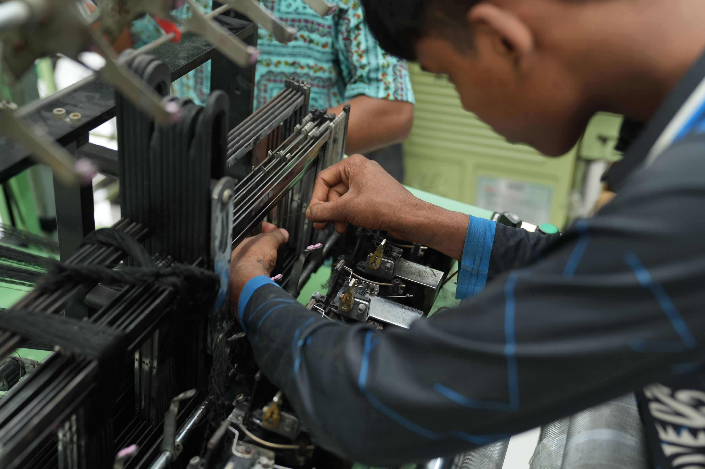

Indústria
Encontre soluções que ajudam empresas e pequenos negócios a modernizar processos, organizar informações e utilizar a tecnologia para melhorar suas atividades.
Tecnologia para transformar comunidades
Encontre, compartilhe e desenvolva soluções tecnológicas para problemas reais.
Conheça o projeto

Encontre soluções que ajudam empresas e pequenos negócios a modernizar processos, organizar informações e utilizar a tecnologia para melhorar suas atividades.
Transforme problemas reais em novas ideias e soluções utilizando a tecnologia para criar formas mais eficientes de realizar tarefas e resolver desafios..
Desenvolva soluções para melhorar a organização, o controle e a manutenção de equipamentos, sistemas e recursos utilizados por empresas e comunidades.